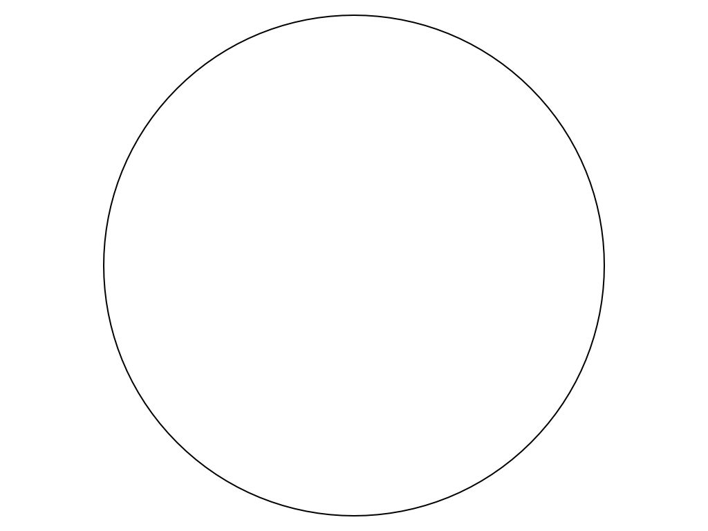
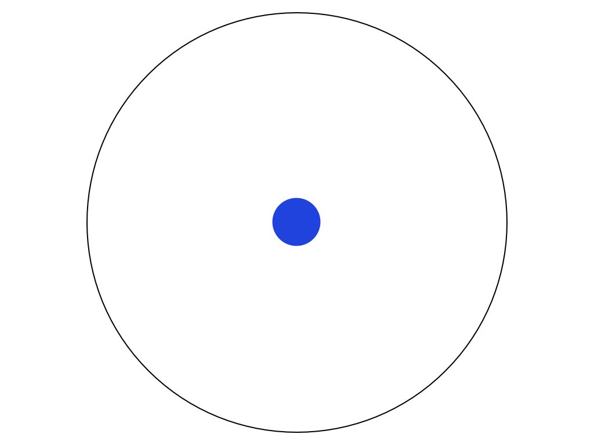
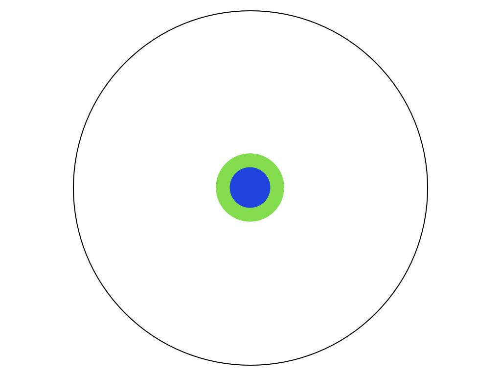
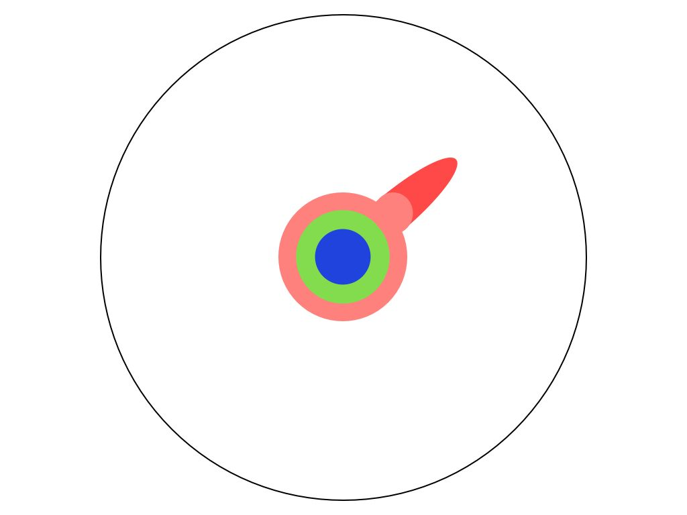
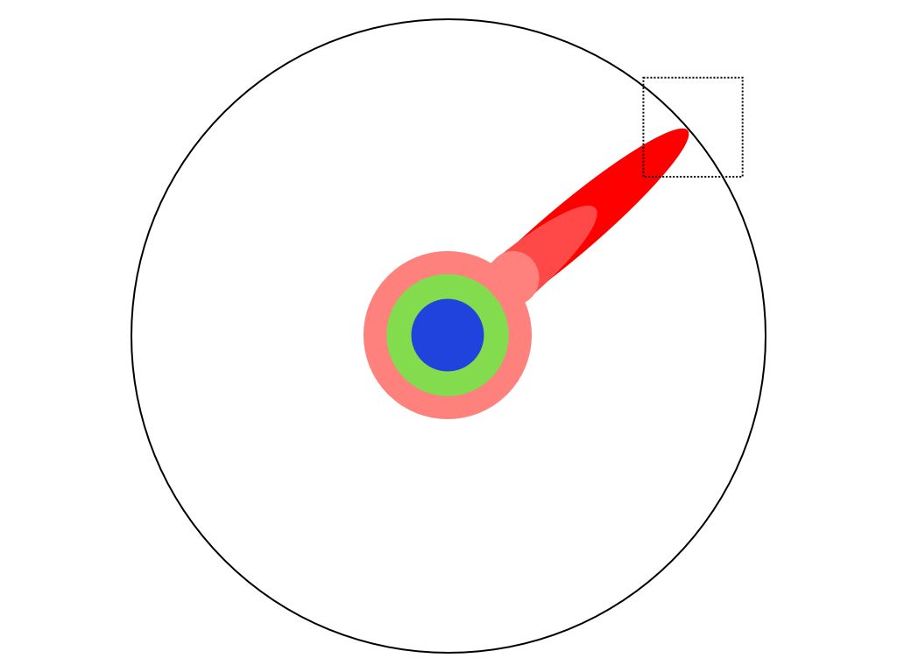
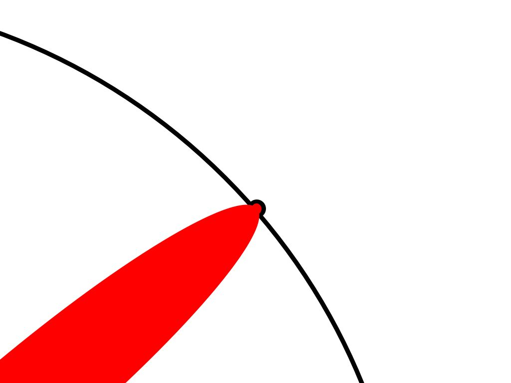
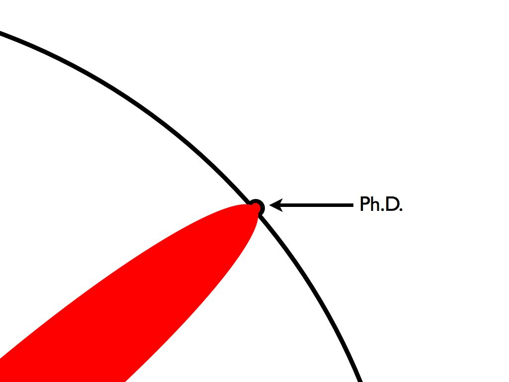
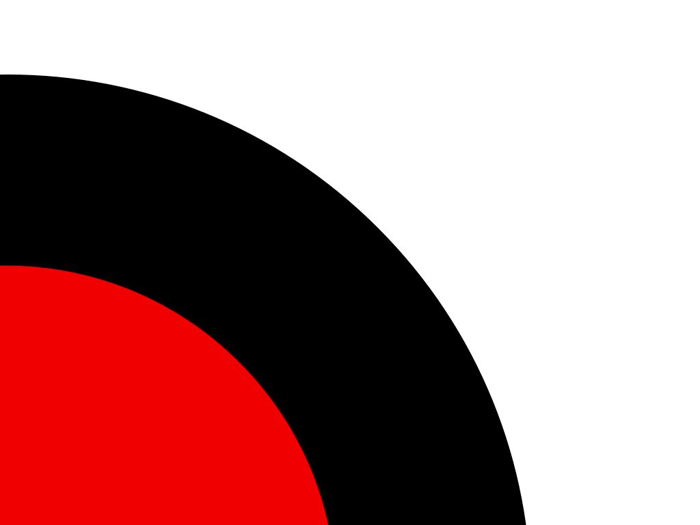
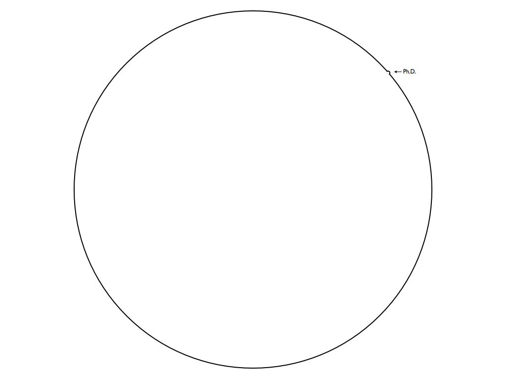

本讲主题
为什么开这门课
课程概述
- 软件工程研究简介
- 课程安排
Policies & 劝退
为什么开这门课？
这门课经历的重造
- 阅读不合格
- 组里相当多的研究生，让他们推荐 3-5 篇经典的重量级论文时，大部分竟然只能拿出贡献很弱的论文
- 技术工作不合格
- 无法对问题进行准确有效的形式化定义
- 无法针对 well-defined 的问题提出合理的解决方法
- 写作不合格
- 逻辑缺乏、用词不当、行文不顺
Raise the bar
- “跟 bar 低的人在一起久了，自己都觉得自己变 low 了”
软件工程研究简介
什么是软件？什么是软件工程？
(我也不知道)
软件工程研究
解决软件工程 (码农生产生活) 里的一切问题
- 让码农
更快 (productivity) 地生产更好 (quality) 的软件- 终极目标：抢走码农的饭碗 (全自动生产高质量的代码)
- 在时间、资源、人员的限制条件下构建满足用户需求的软件系统
看起来很抽象，但软件工程研究始终陪伴你的研究生生活
- 没有软件工程手段，大型软件很难被开发出来、bug 难以被消除
- 操作系统在收集 profiling data 用于诊断
- 代码编辑器提供了补全
- 使用各种测试、调试工具
- 持续集成、开源社区……
软件工程是个应用学科
理解软件开发过程中的方方面面
- 所以有很多 empirical study 类的论文
从其他领域 (常见是
- 有时候 System/PL 本身也解决软件工程问题
- 软件测试、调试、分析……
For fun and profits
- 做一些好玩的、对程序员有用的东西
- 软件工程强调 usefulness (有用)
做 (软件工程) 研究的过程
经典案例分享：什么是 PhD
Imagine a circle that contains all of human knowledge: 
经典案例分享：什么是 PhD
By the time you finish elementary school, you know a little: 
经典案例分享：什么是 PhD
By the time you finish high school, you know a bit more: 
经典案例分享：什么是 PhD
With a bachelor’s degree, you gain a specialty:

经典案例分享：什么是 PhD
A master’s degree deepens that specialty: 
经典案例分享：什么是 PhD
Reading research papers takes you to the edge of human knowledge:
经典案例分享：什么是 PhD
Once you’re at the boundary, you focus: 
经典案例分享：什么是 PhD
You push at the boundary for a few years:
经典案例分享：什么是 PhD
Until one day, the boundary gives way: 
经典案例分享：什么是 PhD
And, that dent you’ve made is called a Ph.D.: 
经典案例分享：什么是 PhD
Of course, the world looks different to you now: 
经典案例分享：什么是 PhD
So, don’t forget the bigger picture: 
你的研究生涯？
理想的研究生生活
- 老板给方向 → 找到问题 → 提出解决方案 → 实现代码 → 做实验 → 写论文 → 发表
实际的研究生生活
- 老板给方向
→ (
坑 ) → 找到问题 → (不是问题/已经解决 ) → 提出解决方案 → (找不到好的方法 ) → 实现代码 → (各种 bugs ) → 做实验 → (实验效果差 ) → 写论文 → (审稿人丑拒 ) → 发表- 其实充满了各种坑 (例如 JYY 读博那些事儿)
- 这门课的主要目标就是带大家提前体验这个流程
万事开头难：解决什么问题？
好问题来源于生产实践
- 巧妙型：卧槽，从来没有人想过这还是个问题啊！不看不知道，一看吓一跳！ (
适合智者 ) - 硬核型：大家已经试图解决一个问题几十年了，但现有技术都不灵光，我要试着克服一下！ (
适合强者 ) - 灌水型
- 让我把这几个已有的东西拼在一起试试，看有没有啥效果
- 这个问题已经做烂了，让我再从犄角旮旯里挖出一个 scope，提高 1%，然后再死命把故事说圆
很遗憾，我们大部分时候就在做这些事😂
评价研究问题
novelty : 发现新问题；发明新技术significance : 解决软件开发者切实关注的重要问题
万事开头难：解决什么问题？ (cont'd)
核心难点
- 我是研一新生，我
看什么都是新的 - 无法准确评价 novelty 和 significance
老板的作用
- 给你适合的研究方向，里面有创新点和研究问题
如果老板给你的问题很糟……
- 在你有发现以后评估 novelty 和 significance
通常是干翻你……
- 要么干脆给你一个可以直接做的问题……
有了问题之后
能力强劲 (good problem solver)
- 找到问题其实就等于解决了 90%，剩下自己努力一下
- 该看论文看论文
- 该写代码写代码
能力弱鸡 (技能储备有限)
- 想不出算法、调不对代码、
调不好参数……
- 老板对能否搞定有自己的判断，搞不定你就难了！
- 积极开展自救
- 读书、读论文
- 骚扰师兄，骚扰老板
- (走上正反馈的正轨)
课程安排
Reading, Writing, Hacking
Reading: 阅读训练
- 包括五个主题，每个主题 4 篇论文 (并不完全正交)
- Empirical software engineering (EMSE)
- Software engineering process (SEP)
- Formal methods (FM)
- Software testing and analysis (STA)
- Software maintenance and evolution (SME)
我们准备的论文是 “最好” 的论文，培养大家的品味 (taste)
- novelty
- significance
- “没想到还有这种操作！”
怎样读论文？
S. Keshav. How to read a paper, ACM SIGCOMM Computer Communication Review, 3(37), 2007.
Three-pass approach
- 第一遍 (非常快速)：category, context, correctness, contributions, clarity
- 第二遍 (理解内容)：主要方法、结论、证据等
- 第三遍 (virtually re-implement)：考虑每一个细节如果是自己，应该怎么做
Reading: 常见的难点和误区
新手主要克服的难点
- 阅读障碍 → 随着阅读量增加自然消失
- 贡献把握不准 → 随着阅读量大幅增加自然消失
- 基础不足 →
不要畏惧补充专业知识
常见误区
我只要读和我最相关的那几篇论文就够了这篇 paper 有个情况处理不了，它就是个垃圾- 年轻时候读 paper 都是 destructive 的
- senior 以后再读就是 constructive 的
Reading: 建议
“功利” 的阅读 (必要)
- “virtually re-implement” 纠正自己的误区
- 很多 (尤其是近期) 的论文都有会议报告的视频/音频
- 他们会提炼问题、研究贡献、组织逻辑
- 首先，构思自己会如何讲，然后观看视频/音频
- 思考为什么论文作者讲得好/不好
不功利的阅读
- Hacker News, Stackexchange, ...
- Communications of the ACM
- Quanta Magazine
- The Morning Paper
- Github 上整理的各类论文列表
Writing: 写作训练
- 常见问题 (重要性排序)
- 形式化不严谨 > 逻辑跳跃 > 论证不充分 > 用词不准 > 行文冗长 > 排版不美观

- 写作需要长期的训练
- 建议：多骚扰老板 (仅这门课的训练是不够的)
Hacking: 编程训练
完成一份软件工程研究，可能需要编写数千/数万行的代码
- 我还要上课、谈恋爱、打游戏、刷题找工作…… 😂
举一些我们组的工作
没什么难的，RTFM + RTFSC, 花点时间就完事了 - 拦截系统调用、虚拟磁盘获得 block trace、磁盘镜像对比
- 修改 Android Runtime 提供调试接口
- 修改正则引擎获得匹配 trace、遗传算法搜索正则表达式
- 使用 QEMU 快照机制进行文件系统测试
- 借助 Clang/LLVM 内部 API 分析内联汇编语义
- 如果觉得难，可以补一些基础课程
- y2b 上海量世界一流大学的公开课
Policies & 劝退
Policies
所有信息都在课程网站发布
Reading (presentation sessions)
- 地点：本教室，自带电脑，4:3 投影仪 (VGA 接口)
- 无故缺席/中文报告/... →
FAIL
Writing
- 违反学术诚信 →
FAIL (有先例) - 超过 deadline →
该作业计 0 分
Hacking
- 超过 deadline →
该实验计 0 分
Reading：课堂论文报告 (30%)
每次 reading class 报告 4 篇论文
- 我们会组织成 conference session
- session chair 简短介绍相关领域
- 4 个报告
- 15 分钟报告 + 3 分钟 Q/A (
全英文 ) - 必须把论文解决的问题、核心贡献和最精彩的地方讲清楚
- 每个同学针对自己的情况填写问卷 (包括偏好的论文等)
- 每个同学至多获得一次报告的机会
- 因重要事由无法出席需找一个备胎
Writing：Research Proposal (30%)
Writing phase
- 使用任何工具撰写一个版本的 research proposal (第一版)
- 根据课堂学习内容修改逻辑和文字 (第二版)
- 使用 LaTeX/Tikz/Pgfplots 完成排版和图表绘制 (最终版)
Reviewing phase
- 同行评议 (peer review)，每个同学评议三个其他同学的提交
按照软件工程领域惯例，PC Charis (任课老师) 最终评选出
Distinguished Proposal Award (< 10%)Distinguished Reviewer Award (< 10%)
Hacking：Programming Assignments (40%)
两个实验
- codesim (C++ 代码相似度检测)
- 分析源代码或二进制代码
- jmtrace (Java 内存访问 tracing)
- 了解一些 Java Bytecode，和程序插桩
自由选一个实验按照 Reusable 标准准备 Artifact
- 设置
Distinguished Artifact Award (< 10%)
劝退
这门课的主要目标是
- 做好的研究、解决世界上没有解决过的困难问题
退课
- 没有 “解决问题” 的觉悟 →
退课 - 我的研究和软件工程/计算机系统没啥关系 →
退课 (性价比太低)
退组
- 我要水一个最低标准去毕业 →
退组 - 本组的同学无法 survive →
退组
退学
- 深切地认识到自己不适合做科研且不打算从头训练 →
退学
End.
本次课作业
下载 Reading List 论文
阅读摘要
完成 Paper Bidding